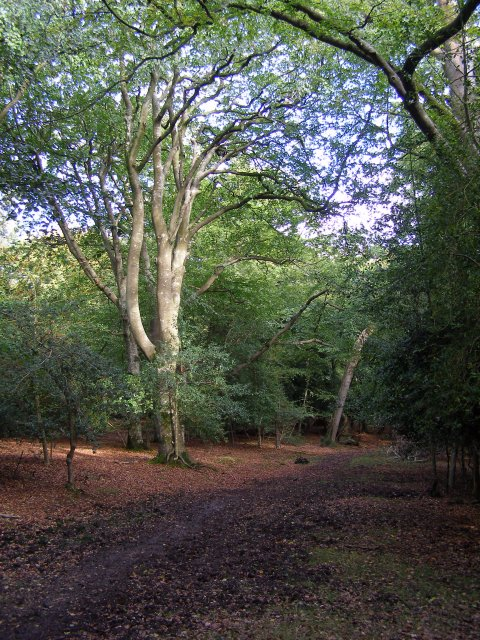
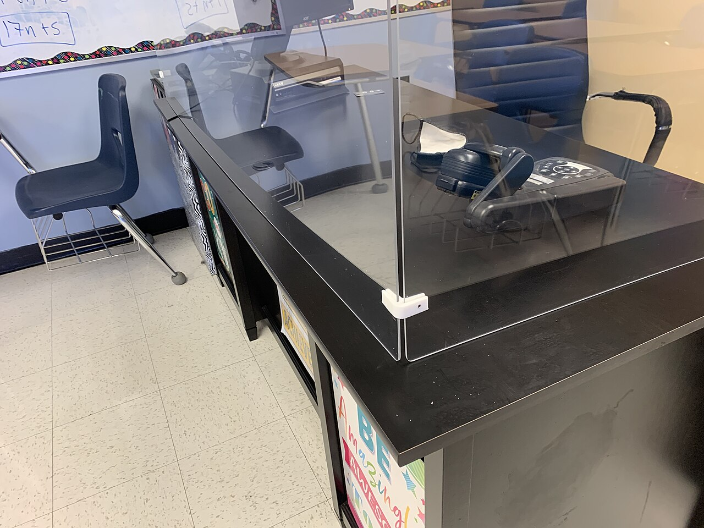
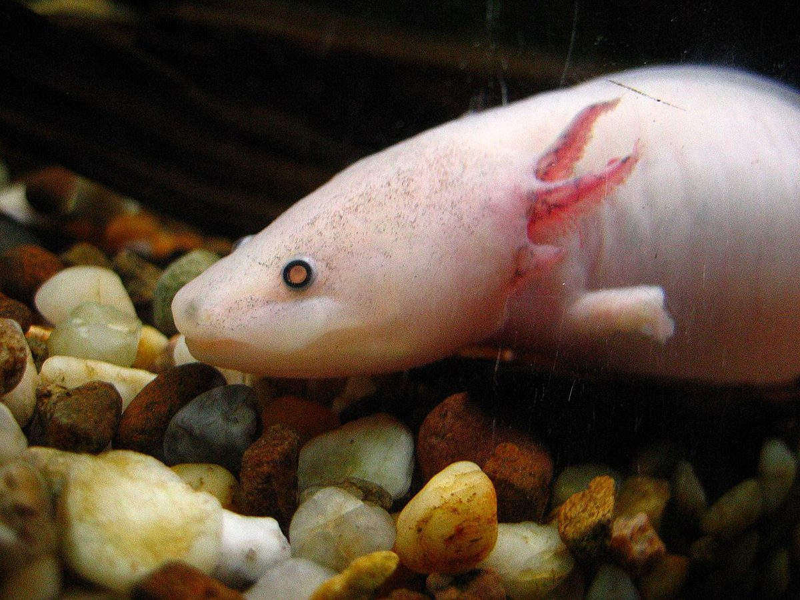

The world this week
Real events from around the world, explained short and calm — nothing scary left in.
61 stories this week
New items are added as they happen, written for young readers.
 10 sunken villages that reappear when the water goes down
10 sunken villages that reappear when the water goes down
Why are forests quietly swallowing a potent greenhouse gas? How does a compass know which way is north?
How does a compass know which way is north?
Why do we sneeze?
The axolotl: 7 facts about the salamander that never grows up How do airplanes stay in the sky?
How do airplanes stay in the sky? How do bees make honey?How do birds know where to go?
How do bees make honey?How do birds know where to go?-
 How a mountain crash made the world's second-tallest tsunami wave
How a mountain crash made the world's second-tallest tsunami waveA chunk of mountain the size of several football fields crashed into an Alaskan fjord, sending water 1,580 feet up the opposite wall — nearly the height of the world's tallest tsunami. Here's how scientists spotted the warning signs days before it happened.
-
 "180,000 giant tortoises are thriving on one tiny island chain — a conservation triumph"
"180,000 giant tortoises are thriving on one tiny island chain — a conservation triumph""A survey of Aldabra Atoll in the Seychelles counted nearly 183,000 Aldabra giant tortoises — up from fewer than 1,000 in the 19th century — proving that strict protection can bring even the biggest animals back from the brink."
Sample — phase 2 -
 "A 1,200-year-old mystery in Peru was solved by a dog's missing teeth"
"A 1,200-year-old mystery in Peru was solved by a dog's missing teeth""Buried in a dry Peruvian desert, archaeologists found ancient hairless dogs — and the same gene that made them hairless also took away their teeth."
-
 Why Antarctic Sea Ice Flipped From Record Highs to Record Lows in Just a Decade
Why Antarctic Sea Ice Flipped From Record Highs to Record Lows in Just a DecadeFor decades Antarctic sea ice grew a little each year. Then in 2015 the trend flipped, and 2026 brought the third-lowest winter maximum on the satellite record — scientists aren't sure if this is a short blip or a lasting shift.
-
 5 reasons smoky peat fires turn the sky over Borneo a rusty orange
5 reasons smoky peat fires turn the sky over Borneo a rusty orangeEach year in Southeast Asia, dry-season fires light up forests and swamps across Indonesian Borneo. The flames are mostly hidden underground, burning through layers of ancient peat, and the smoke they make travels thousands of miles across the ocean.
-
 What happened when Japan's biggest volcano blew 7,300 years ago — and how did people survive?
What happened when Japan's biggest volcano blew 7,300 years ago — and how did people survive?A massive undersea eruption in Japan 7,300 years ago hurled ash for miles and sparked tsunamis — but new research shows some communities actually grew stronger afterward.
-
 "A tiny island just protected a fifth of its ocean — here's what that means"
"A tiny island just protected a fifth of its ocean — here's what that means""Jersey, a small British island in the English Channel, just expanded its protected sea areas from 6.5% to 21.7% of its waters — a safe, quiet underwater playground for seahorses, fish, and shimmering kelp forests."
Sample — phase 2 -
 Why does a magic mushroom ingredient calm down the feistiest fish in the sea?
Why does a magic mushroom ingredient calm down the feistiest fish in the sea?Scientists discovered that a compound from magic mushrooms makes aggressive mangrove-rivulus fish much less likely to escalate into fighting -- a finding about how brains use serotonin, not a medicine for people.
-
 Can a molecule hit the ultimate speed limit for staying "quantum"?
Can a molecule hit the ultimate speed limit for staying "quantum"?Scientists created an ultra-clean crystal surface where individual molecules kept their delicate quantum properties until the very limit physics allows — the first time that has happened for anything sitting on a surface.
-
 10 famous musicians who grew to regret the songs that made them famous
10 famous musicians who grew to regret the songs that made them famousSome artists spend their whole lives running from one song. Here are 10 famous musicians who came to resent the very hits that made them stars — and why they just could not sing them anymore.
-
 "What if Tesla cars and SpaceX rockets joined the same team?"
"What if Tesla cars and SpaceX rockets joined the same team?""Elon Musk — who runs both Tesla electric cars and SpaceX rockets — said he is thinking about merging the two companies into one giant tech team."
-
How did scientists learn to turn brain cells on and off with light? They won the 2026 Nobel Prize
The 2026 Nobel Prize in Physiology or Medicine went to scientists who figured out how a tiny green alga's light sensor could let us flip brain cells on and off with a flash of light — and even help restore vision.
-
 "Why do pilot whales chase killer whales? The ocean's gentlest giants fight back"
"Why do pilot whales chase killer whales? The ocean's gentlest giants fight back""Long-finned pilot whales are not just gentle social whales — they actively chase, mob, and even mimic the calls of killer whales, the ocean's top predator, in a rare case of a prey species standing its ground."
-
 How did sitcoms launch the biggest music careers of the century?
How did sitcoms launch the biggest music careers of the century?"From Zendaya's Shake It Up to Sabrina Carpenter's Girl Meets World, TV sitcoms have been secret launchpads for today's biggest pop stars. Here's how acting turned into chart-topping music."
-
 Why is a 45-million-year-old crocodile skull missing its nose? It was found in the very rocks that built the Great Sphinx
Why is a 45-million-year-old crocodile skull missing its nose? It was found in the very rocks that built the Great SphinxA fossil crocodile skull found in the limestone beneath the Great Sphinx turned out to be a brand-new ancient species — and, like the monument itself, it is missing the tip of its snout.
-
 How steam is cleaning strawberry soil without chemicals
How steam is cleaning strawberry soil without chemicalsA farm machine that pushes steam into the dirt is helping organic strawberry growers in California grow healthier crops — without the chemical fumigants that worry scientists.
-
 Is one side of an alien planet puffier than the other? Webb's new camera found a lopsided world
Is one side of an alien planet puffier than the other? Webb's new camera found a lopsided worldAstronomers using the James Webb Space Telescope have mapped the 3D shape of an alien planet's atmosphere for the first time — and discovered that one side bulges outward more than the other, like a cosmic balloon with a wonky fill.
-
 World's Oldest Shipwreck Found Off Turkey — 4,700-Year-Old Cargo Still Inside
World's Oldest Shipwreck Found Off Turkey — 4,700-Year-Old Cargo Still InsideArchaeologists exploring the seafloor near Kekova Island in Turkey discovered a 4,700-year-old shipwreck — the oldest ever found — carrying amphorae that still held traces of their original cargo.
-
 10 times animals surprised scientists with skills they never saw coming
10 times animals surprised scientists with skills they never saw comingOrcas flee from smaller whales. Elephants may call each other by name. Bumblebee queens can hold their breath underwater for a week. Nature keeps inventing tricks we never guessed existed.
-
 Why do some lakes look like they broke nature's rules? Meet 10 of the strangest
Why do some lakes look like they broke nature's rules? Meet 10 of the strangestMost lakes are just water in a hole. But some glow pink, bubble with methane, burn with underground heat, or even float on the seafloor. Here are 10 real lakes that look like nature hit the weird button.
-
 10 wild facts about bears that prove nature's gentle giants are full of surprises
10 wild facts about bears that prove nature's gentle giants are full of surprisesBears roll in dung to stay warm, carry ammo in war, inspired Winnie-the-Pooh, and even turn green in zoos. Here are 10 wild things we learned about these quiet giants.
Sample — phase 2 -
 How a "squid butt" fossil from Wyoming turned out to be a whole new kind of ancient sea creature
How a "squid butt" fossil from Wyoming turned out to be a whole new kind of ancient sea creatureA fossil nicknamed "squid butt" in Wyoming is so weird it belongs to a brand-new type of ancient squids that lived 160 million years ago.
-
 What do 16 galaxies tell us about the chaos inside space?
What do 16 galaxies tell us about the chaos inside space?NASA's Chandra X-ray Observatory teamed up with Hubble, JWST, and other telescopes to release a gallery of 16 galaxies — each one a different color, shape, and story of cosmic violence, star birth, and black-hole power.
-
 Why Saving One Misty Mountain Lets 200 Kinds of Butterflies Stay Home
Why Saving One Misty Mountain Lets 200 Kinds of Butterflies Stay HomeMozambique protected a misty forest on Mount Mabu so the 200+ butterfly species that live there can keep calling it home.
-
 How a Sloth Bear Named Odum Went From Street Performer to Sanctuary Star
How a Sloth Bear Named Odum Went From Street Performer to Sanctuary Star"Odum was a dancing bear on Indian streets, named by Julia Roberts in 2009. 17 years later he's still the joy of his rescue center."
-
 Why are Bennu’s boulders hiding secrets in the asteroid’s cracks?
Why are Bennu’s boulders hiding secrets in the asteroid’s cracks?NASA’s OSIRIS-REx found asteroid Bennu is covered in giant boulders — yet it still loses heat fast. Samples now show why: every rock is riddled with tiny hidden cracks.
-
 7 Surprising clues about the first 5 minutes of the Universe, found in 15 tiny galaxies
7 Surprising clues about the first 5 minutes of the Universe, found in 15 tiny galaxiesAstronomers used 15 pristine galaxies as cosmic time capsules to measure how much helium the Big Bang made — nailing it down 3x more precisely than ever before.
-
 A simple touch can bring dying corals back to life in 7 weeks
A simple touch can bring dying corals back to life in 7 weeksScientists found that a bleached, whitening coral can fully recover if it simply touches a healthy coral from the same family. It is the fastest comeback from bleaching ever recorded.
-
Why do ultra-cold atoms break the rules and form a brand-new state of matter?
Scientists chilled atoms to almost absolute zero and shook them harder than ever before — and the atoms reorganised into a "fractional Fermi sea", a state of matter textbooks said shouldn't exist.
-
 "91% fewer crashes on the road where animals roam — thanks to a giant bridge just for them"
"91% fewer crashes on the road where animals roam — thanks to a giant bridge just for them""Near Larkspur, Colorado, a 200-foot-wide green bridge arches over Interstate 25 and gives deer, elk, bears, and even pronghorn a safe way to cross — cutting wildlife collisions by 91%."
Sample — phase 2 -
 Why Do Millions of People Light Fires on Hilltops Each October?
Why Do Millions of People Light Fires on Hilltops Each October?"Each October, Indians welcome autumn's festival of light by burning giant paper giants and telling the same good-over-evil story that has warmed hearths for thousands of years."
-
 5 bright ways India celebrates Dussehra and the victory of good over evil
5 bright ways India celebrates Dussehra and the victory of good over evil"Every October, India lights up for Dussehra — giant effigies of the 10-headed king Ravana are set alight, Ramlila actors dance through the streets, and communities celebrate the triumph of good over evil."
-
 How a fin whale's mouth holds enough space to swallow a school bus — and why that giant gulp is how it eats
How a fin whale's mouth holds enough space to swallow a school bus — and why that giant gulp is how it eatsA fin whale off the Welsh coast opened its mouth so wide it took in thousands of tonnes of seawater in one single lunge — the biggest bite any animal on Earth can take.
-
 3 reasons forest soil is secretly eating more of our methane than scientists expected
3 reasons forest soil is secretly eating more of our methane than scientists expectedA 24-year study found that warming, drier forest soils in Germany are pulling more methane out of the air than the biggest prior study suggested — a hopeful twist in the climate story.
-
 "How 1,016 bison are healing America's largest private prairie"
"How 1,016 bison are healing America's largest private prairie""At American Prairie in Montana, the first 4-digit bison herd in 20 years proves that rewilding works — even as the herd battles legal fights over public-land grazing permits."
-
 Why Is That Star Green? Astronomers Find the First Genuinely Green Star
Why Is That Star Green? Astronomers Find the First Genuinely Green StarMost stars are red, white, or blue, but a new study found a dying star that would actually look green to human eyes — and explained why some white dwarfs break the rule.
-
 10 surprising true facts from history that sound totally made up
10 surprising true facts from history that sound totally made up"History is sometimes stranger than fiction. Viking teeth were filed, a diary was written in secret code, and premature babies once 'performed' at amusement parks. Here are ten real things people actually did."
-
 What do waves above a hurricane look like? NASA snapped ripples dancing through the sky
What do waves above a hurricane look like? NASA snapped ripples dancing through the skyHurricane Simon churned across the Pacific, but high above its clouds something stranger was happening — NASA satellites caught ripples of air glowing like rings on a pond, sent up by the storm's own churning.
-
 Why are hurricane warning maps getting better — and why that is not enough?
Why are hurricane warning maps getting better — and why that is not enough?New graphics from the National Hurricane Center show inland storm areas better than ever, but a Florida State study found that clearer pictures do not always mean people act safer.
-
 What was the chunkiest prehistoric squid? A 160-million-year-old "squid butt" found in Wyoming
What was the chunkiest prehistoric squid? A 160-million-year-old "squid butt" found in WyomingPaleontologists have found the chunkiest belemnite ever — an ancient squid relative whose barrel-shaped fossil was as wide as it was long, hiding in Wyoming's rocks for 160 million years.
-
 Why did the ground near a volcano start moving? Satellites spotted two hidden magma sources
Why did the ground near a volcano start moving? Satellites spotted two hidden magma sourcesA volcano famous for its glowing lava lake is hiding two hidden magma sources. Satellites watched the ground sink, then rise — and scientists say that helps warn the 2 million people who live near it.
-
 Why are Mars's moons so lumpy? A new mission will grab a handful to find out
Why are Mars's moons so lumpy? A new mission will grab a handful to find outJapan's MMX spacecraft blasted off to Mars's moon Phobos to scoop up moondust and bring it back to Earth — the first sample ever from the Mars system.
-
 Mosasaurs: the fast, sneaky hunters of the ancient seas
Mosasaurs: the fast, sneaky hunters of the ancient seasWhile dinosaurs ruled the land, bus-sized mosasaurs hunted the ocean. New physics models show they did it with sudden, sneaky bursts of speed.
-
 Which movie "bad guys" are actually the good guys in disguise?
Which movie "bad guys" are actually the good guys in disguise?"Every movie has a hero and a villain, but what if the person getting in the hero's way isn't really the bad guy at all?"
-
 Could two giant black holes crash together in just 100 years?
Could two giant black holes crash together in just 100 years?Astronomers watching galaxy Mrk 501 for 23 years have found a hidden second black hole sweeping around the first — and the two giants may merge within a human lifetime.
-
 How does a dog sniff out an invisible sea invader called 'sea vomit'?
How does a dog sniff out an invisible sea invader called 'sea vomit'?"A Labrador named Sgiath learned to sniff out a slimy, orange invader on the seafloor — and save the day for native sea creatures."
-
 How a rocket launch painted a jellyfish in the sky
How a rocket launch painted a jellyfish in the skyA SpaceX Falcon 9 lifted off for the Space Station at sunrise and lit up the eastern sky with a glowing shape that looked just like a jellyfish floating in space.
-
 A Third Kind of Magnetism? Physicists Find Hidden Magnetic State Called Altermagnetism
A Third Kind of Magnetism? Physicists Find Hidden Magnetic State Called AltermagnetismFor more than 100 years, physicists thought magnets came in just two flavors — ferromagnetic and antiferromagnetic. Now a new magnetic state called "altermagnetism" joins the list, and its discoverers have just won Europe's top condensed-matter prize.
-
 What the uranium cubes reveal about Hitler's lost nuclear program
What the uranium cubes reveal about Hitler's lost nuclear programScientists studied surviving uranium cubes from Nazi Germany's secret nuclear program and found the reactor was far from working — it lacked the fuel and heavy water needed for a chain reaction.
-
 Why did a bear walk into a bakery at a farmers market?
Why did a bear walk into a bakery at a farmers market?A hungry black bear strolled straight past the shoppers at an Aspen market and made a beeline for the bread booth — and stayed, they say, for a snack and a nap.
-
 A 12-foot shark got stuck in a city canal — and the internet made it famous
A 12-foot shark got stuck in a city canal — and the internet made it famousA bronze whaler shark chased its lunch into a canal in South Korea and could not find its way out. Then 600,000 people came to wave.
-
 Why are owls nesting in a Manhattan water tower?
Why are owls nesting in a Manhattan water tower?A family of barn owls moved onto a rooftop water tower in the heart of New York City — the first barn owl nest anyone can remember in Manhattan.
-
 Why is NASA hunting for caves to build a Moon base?
Why is NASA hunting for caves to build a Moon base?Before anyone can live on the Moon, NASA wants to find underground caves, hidden ice, and safe ground. Three new missions are going to scout the way.
-
 Eight orangutans go home: a forest waited for them
Eight orangutans go home: a forest waited for themAfter wildfires destroyed much of their jungle this summer, eight orangutans were rescued, cared for, and driven back to a safe forest. It was the first release since the fires began — and the news made a lot of people happy.
-
 Can a crayfish get bigger than "Crawzilla"?
Can a crayfish get bigger than "Crawzilla"?A friendly rivalry over one giant Kentucky crayfish sent scientists on a nationwide hunt — and the real record-holder turned up hiding in a museum drawer.
-
 Can a world 20 light-years away have weather?
Can a world 20 light-years away have weather?NASA's Webb telescope watched a wild world 20 light-years away and found its stormy skies follow surprisingly tidy rules — three repeating weather patterns, not total chaos.
-
 Look up: October's sky has a meteor shower
Look up: October's sky has a meteor showerNASA's monthly sky guide says the Orionid meteor shower lights up this month — here is how to watch it with no telescope at all.
-
 Why is NASA's $4.3 billion telescope already beating expectations in space?
Why is NASA's $4.3 billion telescope already beating expectations in space?Weeks after launching on August 30, NASA's Nancy Grace Roman Space Telescope is already delivering images nearly 30% sharper than pre-launch predictions — thanks to engineers tweaking mirrors by a sliver thinner than a human hair.
-
 A telescope named after "the mother of Hubble"
A telescope named after "the mother of Hubble"NASA's newest space telescope made TIME's list of the best inventions of 2026 — and it carries the name of a woman who fought to be in astronomy at all.
-
 What if a road only one atom high could carry tiny cars?
What if a road only one atom high could carry tiny cars?Scientists found that atomic steps just one atom tall can act like invisible rails, guiding quantum whirlpools in superconductors more than 1,000 times more easily than any other path. It is a tiny shortcut that could one day make electricity cables loss-free.
-
 Five cheetah cubs, one very busy camera
Five cheetah cubs, one very busy cameraFive cheetah cubs were born at the Smithsonian's conservation park — and you can watch all of them, around the clock, on a livestream.